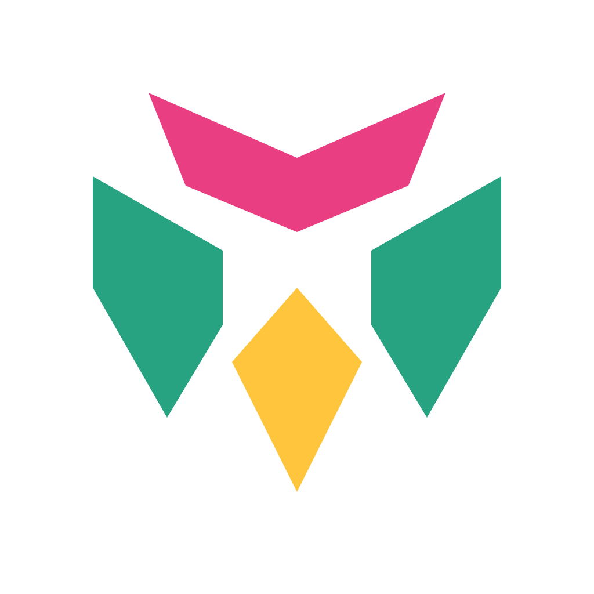

A / Guardian / selected
Strong bilateral shape. A watchful face made from four solid pieces, not a letter.
A carved, angular mask for an agent that keeps watch. Jade side panels protect the amber core. The crimson crown points forward. Clear gaps keep each part distinct.
Strong bilateral shape. A watchful face made from four solid pieces, not a letter.
An enclosed spark. Clear at small sizes, but reads more like an energy brand.
Repeated chevrons suggest progress. Less distinct than the guardian face.

saul